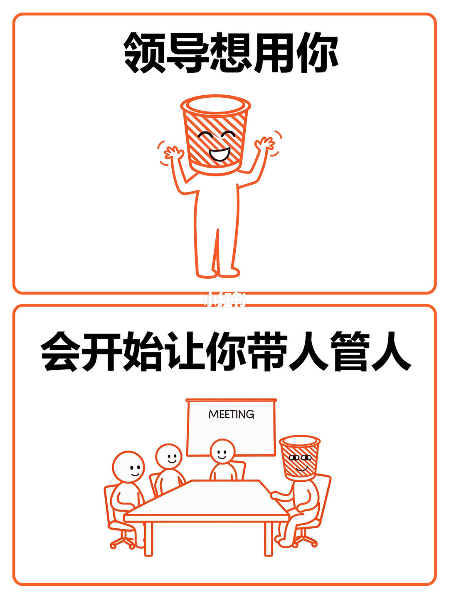
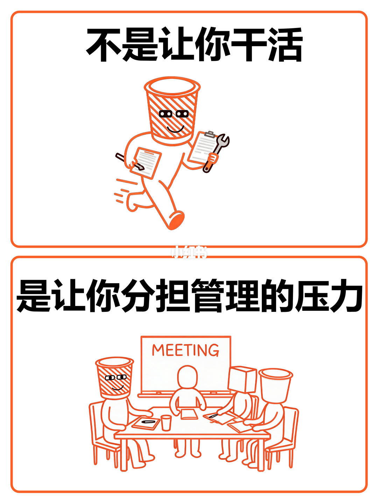
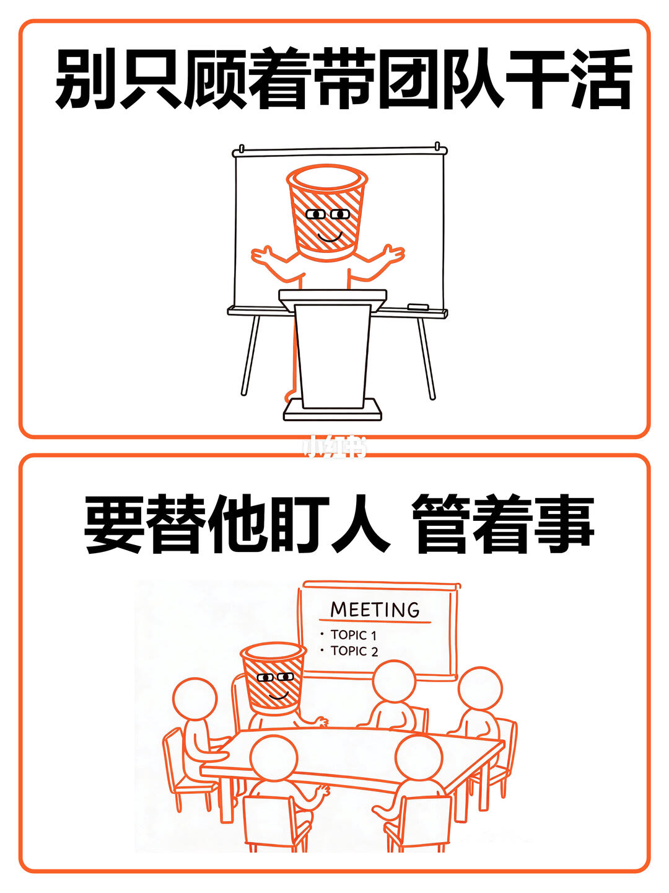
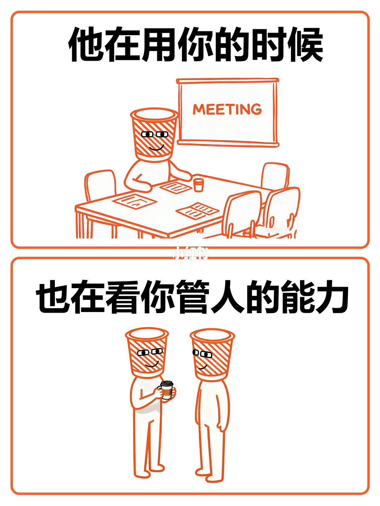
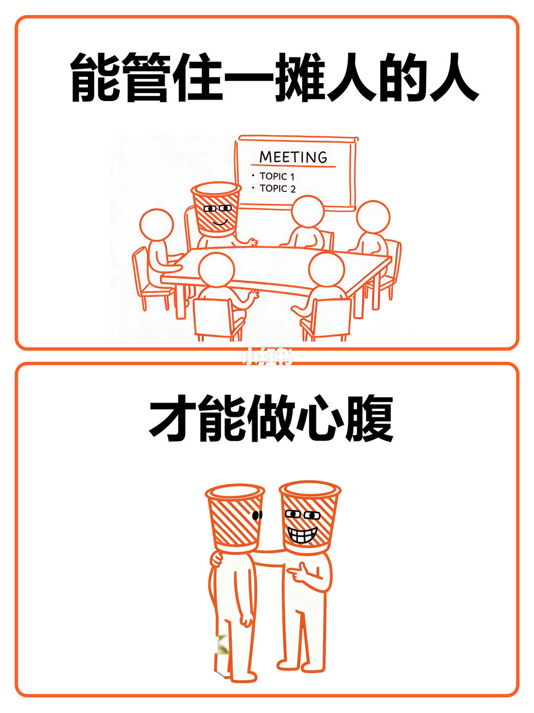
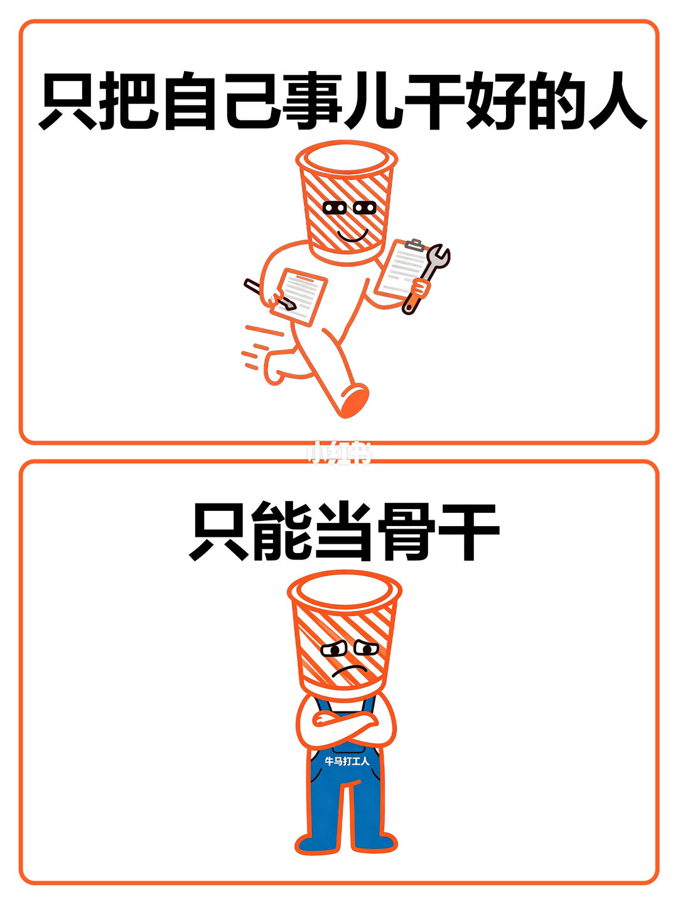

图文实录 · 小红书 · 桶叨叨
职场里一定要明白的事
笔记要人明白的一件事是：领导想用你，看的是你能不能替他管人管事，不是你能不能把自己的活干完。六页都是橙线漫画，每页上下两句，把「干活」和「管人」拆开，最后落到两个去处：管得住一摊人才能做心腹，只把自己的事干好只能当骨干。
1/6
想用你，就会让你带人管人

上栏大字是「领导想用你」。画面是一个桶头角色单独站着，手臂扬起。
下栏大字是「会开始让你带人管人」。桶头角色坐到会议桌边，旁边有几位圆头人物，背景白板写着 MEETING。两句上下叠在一起，中间没有解释「用」还有没有别的做法。
2/6
不是让你干活，是让你分担管理压力

上栏大字是「不是让你干活」。桶头角色拿着板夹在跑，像一个人把执行的活扛在身上。
下栏大字是「是让你分担管理的压力」。画面回到会议桌，桶头角色坐在桌边，对面有方块头的人物，白板写着 MEETING。这一页把第 1 页的「带人管人」改写成目的：分担管理压力，而不是多干执行的活。
3/6
别只带团队干活，要替他盯人管事

上栏大字是「别只顾着带团队干活」。桶头角色站在白板前，手臂张开，像在对团队讲。
下栏大字是「要替他盯人 管着事」。桶头角色坐回会议桌，桌上有其他人，白板写着 MEETING，下面两行是 TOPIC 1 和 TOPIC 2。「他」承接第 1 页的领导。这一页把「带团队干活」写成不够，要求的是替领导盯人、把事管住。
4/6
用你的时候，也在看管人的能力

上栏大字是「他在用你的时候」。桶头角色一个人坐在会议桌前，桌上有纸，白板写着 MEETING，旁边有空椅子。
下栏大字是「也在看你管人的能力」。两个人面对面站着说话，不再是开会。上句说「用」，下句把被看的内容写成管人能力。图上没有评分项，也没有说产出还看不看。
5/6
能管住一摊人，才能做心腹

上栏大字是「能管住一摊人的人」。会议桌一圈坐着几个人，桶头角色在上首，白板写着 MEETING，下面是 TOPIC 1 和 TOPIC 2。
下栏大字是「才能做心腹」。两个桶头角色靠在一起，其中一个搭着另一个的肩。上下句是条件关系：管得住一摊人，才到得了心腹。图上没有写心腹的职级、权限或时限。
6/6
只把自己的事干好，只能当骨干

上栏大字是「只把自己事儿干好的人」。桶头角色又回到一个人赶工，手里是板夹一类的东西。
下栏大字是「只能当骨干」。桶头角色抱臂站着，神情收着，不再是上栏那种在跑。衣服上是否印了字，放大后仍无法确认。这一页给第 5 页一个对照结局：个人把事干好，作者写成停在骨干。
汇总
管人是去处，干活是天花板
结论：六页讲的是同一条判断。领导要用人，就会让你带人、分担管理压力，并且看你管人的能力；能管住一摊人，作者才称为心腹；只把自己的事干好，作者称为骨干。支撑页是 1/6 到 6/6，对照最清楚的是 2/6、3/6 和 5/6、6/6。
边界：这是漫画判断句，没有岗位、人数、考核表或例子。「心腹」「骨干」是作者的叫法，图上没有写成职级。白板英文只是开会道具。第 3 页要求「盯人、管着事」，但六页都没有步骤。衣服小字无法确认的，不能补进结论。